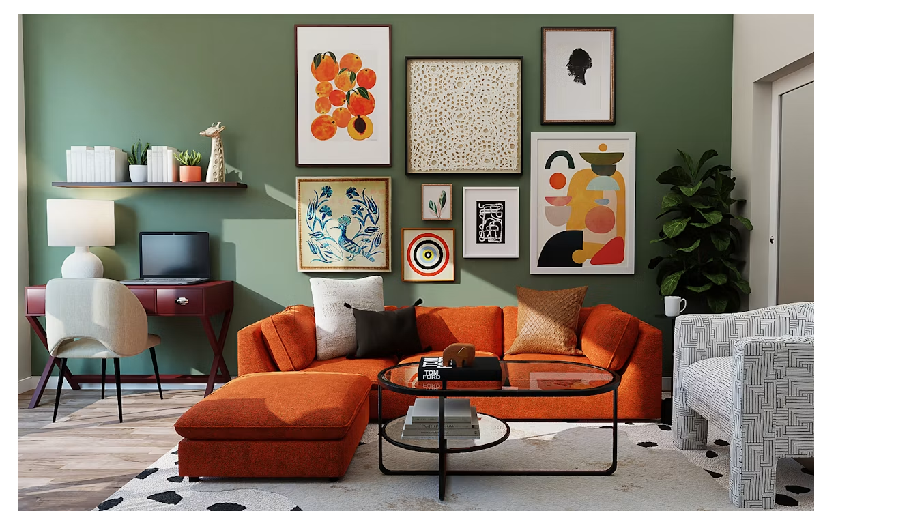

Independent concept projectSpace,
Architecture · Interiors · Kolkata / Goa
Space,
made
personal.
We design calm, enduring places shaped by climate, craft and the people who inhabit them.
Explore selected work →
Casa Serein · Goa01 / Approach
Places with a quiet sense of belonging.
FORMA is an architecture and interior studio creating thoughtful spaces with local intelligence and lasting character.
03 / What we do
From first sketch to final detail.
01
Architecture
Context-led homes and hospitality spaces, developed from feasibility through construction.
02
Interior design
Material-rich interiors that balance daily function, atmosphere and the life already present.
03
Spatial renewal
Sensitive renovation and adaptive reuse that preserve what matters and improve what no longer works.